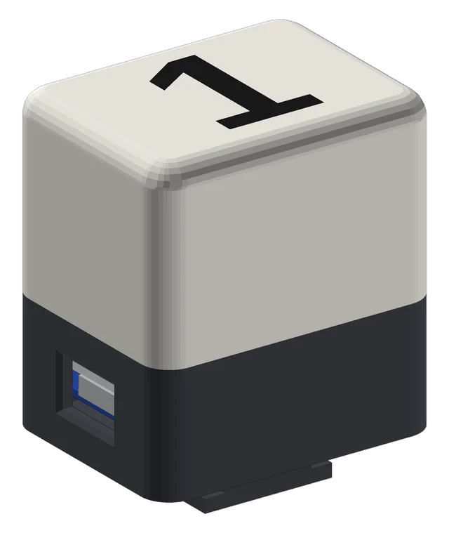
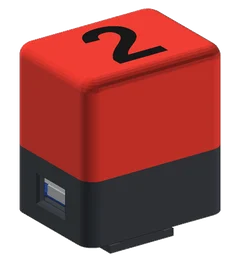
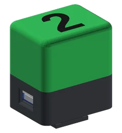
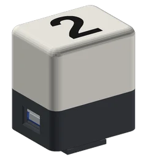
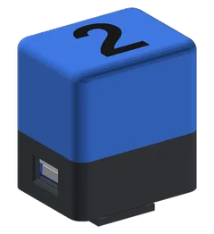
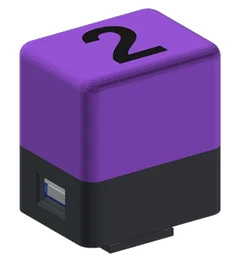
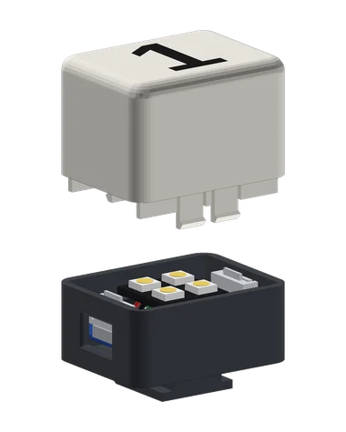

Ukazuje kameramanovi aj moderátorovi, ktorá kamera je práve vo vysielaní. Bezdrôtovo cez Wi-Fi s prepínačmi ATEM Mini Pro a ATEM Mini Pro ISO.


ČervenáPROGRAM – kamera je naživo
ZelenáNÁHĽAD – kamera je pripravená
NesvietiKamera nie je použitá alebo chýba spojenie s ATEM
Bliká modráPripája sa k Wi-Fi
Bliká fialováAktualizácia – neodpájajteĎalšie jednotky pridáte v aplikácii v časti Nová jednotka: zadáte heslo zo štítku novej jednotky a zapnete ju. Nastavenia si prevezme sama.

| Napájanie | 5 V DC, micro-USB, max. 0,3 A |
|---|---|
| Wi-Fi | 802.11 b/g/n, 2,4 GHz, WPA2, max. 18 dBm e.i.r.p. |
| Kompatibilita | ATEM Mini Pro, ATEM Mini Pro ISO |
| Číslo kamery | 1 – 20 |
| Upevnenie | pätka do sánok + závit 1/4″-20 (max. 7 mm) |
| Rozmery, hmotnosť | 40 × 31 × 49 mm, približne 25 g |
| Prostredie | len v interiéri, IP20, 0 – 40 °C |
| Stále pulzuje modrá | Dokončite nastavenie cez sieť Tally-xxxxxx. Wi-Fi musí vysielať v pásme 2,4 GHz. |
|---|---|
| Nesvieti, aplikácia hlási „Bez ATEMu“ | Skontrolujte IP adresu ATEM a to, že ATEM je káblom v tej istej sieti. |
| Neotvorí sa .local adresa | Použite IP adresu jednotky zo zoznamu zariadení v routeri. |
| Zabudnuté heslo | Pripojte a do 2 s odpojte napájanie 2×, tretíkrát nechajte pripojené. Platí opäť heslo zo štítku. |
Od verzie 2.1 stačí tlačidlo: v aplikácii ZT-1 stlačte Vyhľadať aktualizáciu (v nastaveniach jednotky alebo v časti Aktualizácia firmvéru pre všetky jednotky) a potom Nainštalovať. Jednotka si firmvér stiahne sama, overí podpis výrobcu a reštartuje sa; nastavenia zostanú zachované. Počas aktualizácie bliká nafialovo – neodpájajte napájanie.
Stiahnuť najnovší firmvér (.bin)Súbor .bin potrebujete len v sieti bez internetu (v aplikácii nastavenia jednotky → Firmvér → Sieť bez internetu – nahrať súbor .bin) a pri prechode z verzie 2.0 (nastavenia jednotky → Firmvér → Vybrať súbor → Nahrať do tejto jednotky). ZT-1 prijme len súbor podpísaný výrobcom.
SHA-256: 014b311cf01e86ca13a542af87a028f43f48bc8904eb9df90f5fa2bb253e3812
Na ZT-1 poskytujeme záruku 36 mesiacov nad rámec vašich zákonných práv. Pri kontakte majte pripravené výrobné číslo zo štítku.